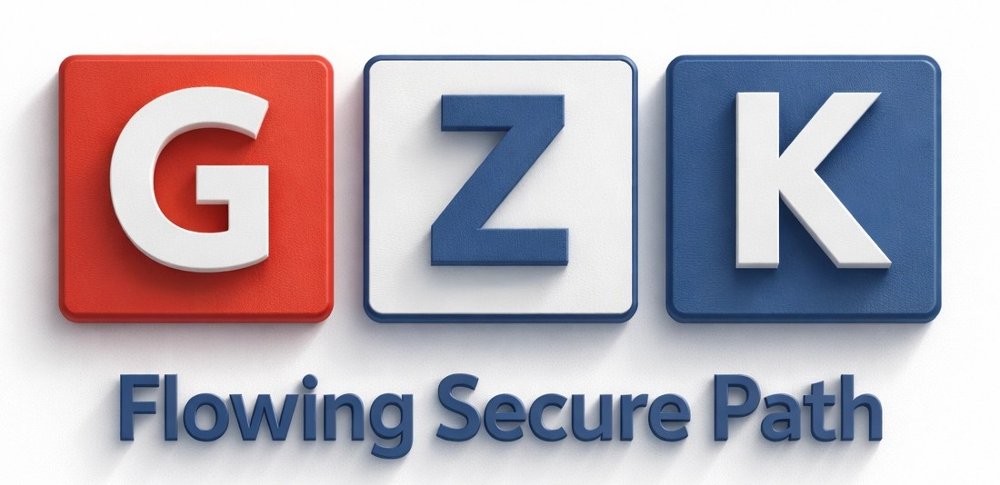
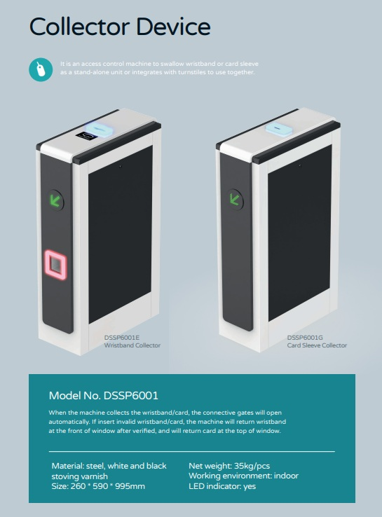
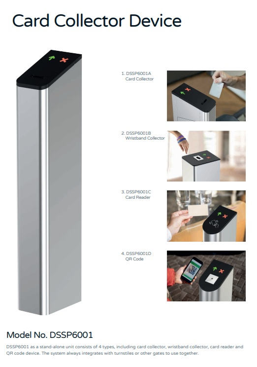
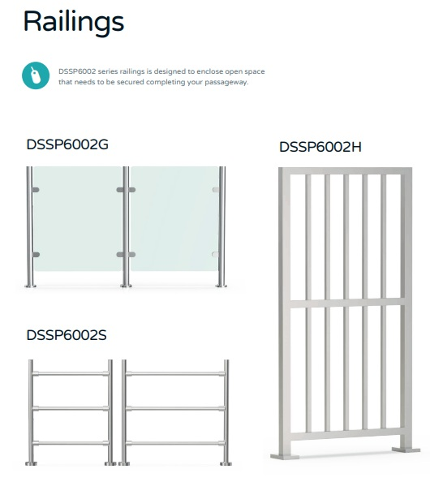

เพิ่มประสิทธิภาพและความปลอดภัยให้สมบูรณ์แบบยิ่งขึ้น

อุปกรณ์สำหรับรองรับการเก็บคืน Wristband และ Tag RFID เมื่อผู้ใช้งานต้องการออกนอกพื้นที่ เหมาะอย่างยิ่งสำหรับ Visitor Management, Theme Park หรือ Exhibition ต่างๆ ช่วยอำนวยความสะดวกโดยไม่ต้องมีเจ้าหน้าที่ประจำจุดรับคืนบัตร

เครื่องจัดเก็บคืนบัตรอัจฉริยะที่สามารถคัดกรองเฉพาะบัตรของโครงการเท่านั้น หากเป็นบัตรอื่นเครื่องจะไม่รับและคืนบัตรให้ทันที นอกจากนี้ยังมีออปชั่นรองรับการอ่าน Wristband, QR Code จากสมาร์ทโฟน หรือบัตร RFID เพื่อให้เหมาะสมกับความต้องการเฉพาะทางของคุณ

ในกรณีที่การติดตั้งประตูอาจไม่พอดีกับขนาดพื้นที่จริง เรามีส่วนเสริมเป็น ราวกั้นทางดีไซน์ทันสมัย เพื่อปิดช่องว่างและเติมเต็มระบบความปลอดภัยให้พื้นที่ของคุณสมบูรณ์แบบ ป้องกันการเดินอ้อมหรือลักลอบเข้าพื้นที่โดยไม่ผ่านการคัดกรอง
เราพร้อมให้คำปรึกษาในการเลือกอุปกรณ์เสริมที่เหมาะกับหน้างานและงบประมาณของคุณ
คลิกเพื่อสอบถามข้อมูลหรือขอประเมินราคา